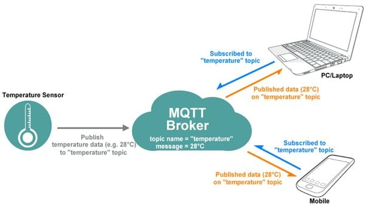

Maandag 8 september 2025
IoT met Raspberry Pi & MQTT
Praktische hands-on sessie
Korte samenvatting
We sloten een Raspberry Pi aan op een temperatuursensor en gebruikten blokprogrammering om data live naar een digitaal schoolbord te sturen via MQTT. Geen code typen, maar wel een echte verbinding opzetten: van sensor → Raspberry Pi → netwerk → dashboard.
Gebruik tijdens mijn eigen studie (buiten de minor)
Niet gebruikt. Bij Technische Bedrijfskunde komt IoT wel aan bod in theorie, maar nooit hands-on met Raspberry Pi.
Bruikbaar voor verdere carrière
Voorlopig alleen voor hobbyprojecten thuis – denk aan een eigen weerstation of slimme tuin.